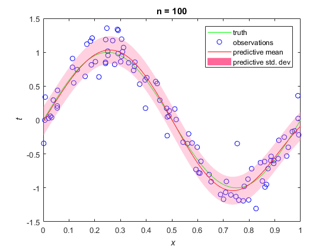
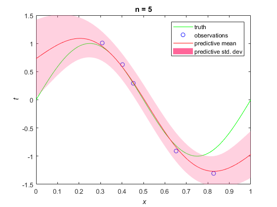

ECE414 Makeene Learning - Project 2, Part II
By Jeffrey Shih
Contents
Linear Regression, Predictive Distribution - Data Generation
clc; clear all; close all;
N = 100;
x = rand(N,1);
sigma = 0.2;
beta = 1/sigma^2;
noise = randn(N,1)*sigma;
t = sin(2*pi*x) + noise;
nWeights = 9;
alpha = 2;
S0 = alpha^(-1)*eye(nWeights);
m0 = zeros(nWeights,1);
u = linspace(0,2.5,9);
s = 0.2;
Linear Regression, Predictive Distribution - Plotting Figure 3.8
close all;
figure;
update_plot_3_8(N,N,nWeights,x,t,beta,m0,S0,u,s)
f = figure;
update_plot_3_8(0,N,nWeights,x,t,beta,m0,S0,u,s)
slider = uicontrol('Parent',f,'Style','slider','Position',[10 50 20 340],...
'value',0,'min',0,'max',N,'SliderStep',[1/(N-0) 1]);
bgcolor = f.Color;
slider_label1 = uicontrol('Parent',f,'Style','text','Position',[10,24,23,23],...
'String','0','BackgroundColor',bgcolor);
slider_label2 = uicontrol('Parent',f,'Style','text','Position',[10,390,30,23],...
'String',num2str(N),'BackgroundColor',bgcolor);
slider.Callback = @(es,ed) update_plot_3_8(round(es.Value),N,nWeights,x,t,beta,m0,S0,u,s);
 